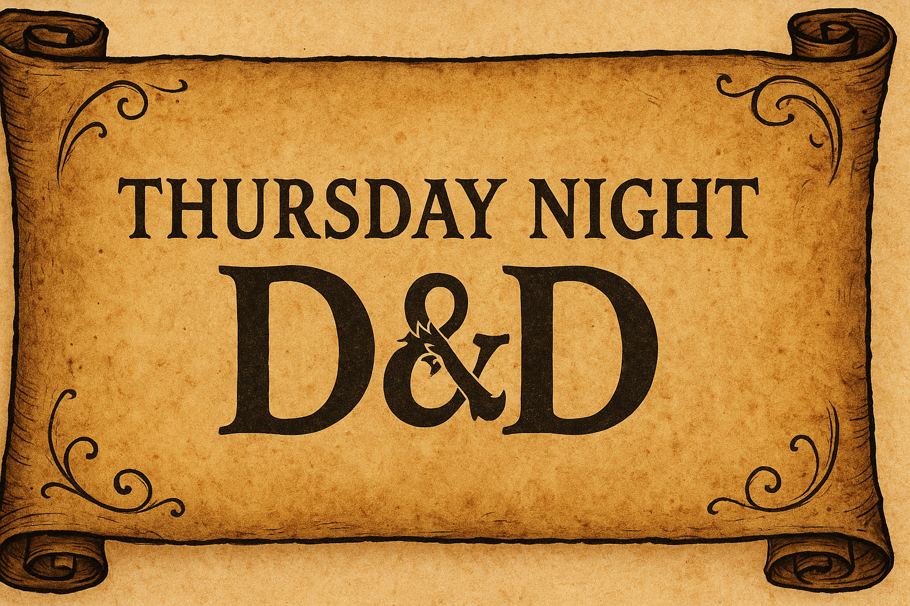

Echoes of Leilon
“In the shadow of thunder and time, the stones of Leilon remember more than we do—echoes of valor, betrayal, and the fragile hope that even ruins may rise again.”
This chronicle, known now as The Echoes of Leilon, has been pieced together by Scholar Thaelen Morovyn of Candlekeep, compiled from recovered letters, scorched documents, and the surviving tales of those who walked beside the storm.
Prologue – Chapter 0: Return to Phandalin
12 months have passed since the slaying of the young white dragon, Cryovain a peace has fallen over Phadalin and the Sword Coast. The adventurers who slayed the dragon returned to the town they had called home to help the rebuilding process.
As time goes on and the terror the dragon brought becomes a distance memory, the adventurers go there separate ways. Baz’hak slips away one night leaving no trace that he was ever there, Manon taking the knowledge she gained during her time with the party and going back to her studies in the remote Sword Mountains and Orsik returning to his home lands.

This left Guy Thundercaller leading the rebuilding effort of Phadalin, helping to rebuild the town to its former glories and beyond. He over saw the installation of a town master - Cedric Broadshield, a former acquittance from Neverwinte, he gained the nickname “Iron Quill” unyielding determination to see justice served, whether through careful diplomacy or clever legal maneuvering. After exposing corruption in a noble house in Neverwinter he moved to Phadlin to start again with his daughters Mira and Elara.
Bardlebie also remained in Phandalin telling tales and singing songs from his time as an adventure and how he single handly killed a dragon to dozen of adoring fans. As time goes on he sang less and took up other pursuits attuned to his new found fame.
An unlikely couple of creatures head to Phadalin in the form of Kalidor, a naive elf who is entering the world for the first time after a shelled upbringing and Barzul. Who is a Gnome with a very dark soul. Both drawn to Phadalin through meetings with Orsil and given instruction to find the rest of the party. Stumbling upon each other in a graveyard - seeing light within Barzul, Kalidor looks to help his new found friend see the light but unbeknownst to him it is all a ruse by Kalidor to use Barzul for his own devices.
Another new face comes to Phadlin during the rebuilding of the town, a young woman with a knack for tinkering and invention, who is looking for a new place to call home. She has a something in her past that she is trying to escape from but will not let anyone get close enough to find out what happened, she see her past as a weakness that she wants to escape from and look to try right some form of wrongs. She enters a village that opens strangers with open arms but she doesn’t seem to keen to be in its embrace.
It seemed like another evening in Phaaldin, the towns folks had returned home from a hard days work in the fields and rebuilding the final houses in town to return. People where enjoying the evening at the Stonehill Inn, our party of adventurers are drawn there - Guy to speak to the Iron Quill about his time coming to an end in Phadlin, Kalidor and Barzul carrying on their quest to find the adventures and Bardlebie was getting to know one of the new members of town as Ash enters the bar....
Ash enters the Inn and moves towards the bar, moving with easy between the patrons enjoying a well-earned drink after a hard day’s work.
In one corner of the bar, nursing their drinks sits Barzul and Kalidor discussing their next moves until Barzul feels a presence in the bar with an aurora of death that he finds irresistible, he scans the Inn looking for the source of this power.
Guy Thundercaller sits in another corner of the Inn, speaking with the Ironquill, the new town master of Phandalin discuss his plans to leave town now the rebuilding is almost complete, feeling his quest has been completed and knowing others on the Sword Coast needs his help. The Ironquill seems to become distracted and focused on a door on the first floor and the young girl who just disappeared through it.
Ash is getting closer to the bar, being surrounded by people makes her feel uncomfortable, she wants to be far from here far from people. She hears someone talking to her to her left, she cant remember what he said but she understood its tone. The voice says something again and its owner layers a hand on Ash’s shoulder and tries to pull her in close.
Bardlebie is loving life – the fame, the gold and the women that come with being one of the adventures who rid the land of Dragon. This evening, he is making the acquaintance of Elara, one of the new sisters who have moved into town. Her farther is someone of importance but Bardlebie cant remember who he is but at this moment in time he does not care…
The Iroquill stands and begins to walk towards the stairs up to the first-floor door he took so much interest in. Guy stands to follow; he takes 2 steps but then stops and looks to the bar.
It all happens in a flash, the hand on her shoulder, the cry of the man as she broke his wrist. The threats of the mans friends and other patrons at the bar, more hands and fists in coming in her direction. Ash’s world turns into a blur.
Kalidor tries to bring Barzul attention back to their conversation but then like a beacon Kalidor found what he was looking for, he grabbed his friend’s wrist and pulled them into the fray at the bar.
Guy looked over at the fight going on at the bar, more and more of the patrons where joining. He was getting ready to sit down when he heard the crashing of a door and a heated argument taking place then he saw a very naked shape dart from the door and then leap from the balcony into the crowd below, at this moment Guy sighed, finished his drink and waded into the fray.

There was banging at the door, but Bardlebie didn’t care, he was wondering if he had ordered food and drink, and it was one of the bar staff bringing it up. He could hear a voice from behind the door, but he had more pressing matters to attend to, that was until the door was kicked in. A man stood there shouting at him and his new friend, she screamed in recognition. A back and forth between them begin and that’s when Bardlebie noticed the knife in the man’s hand. His instincts kicked in, he slided from the bed to the floor, grabbing his cloths, coin, bag and lute. He sprinted to the door side stepping the man while he sure he heard his company mentioned being in love.
Chapter I: The Siege at Wayside
The tale picks up not with triumph, but with flight. The embers of a duel still smoldered in Stonehill Inn as the adventurers made their escape beneath a dusk-dark sky. With Guy at their side and tension hot on their heels, they raced west along the road—toward the High Reed, toward uncertainty. They were not alone for long.
From behind, half-dressed and grinning like a jester caught in a brothel, Bardlebie joined the retreat—trailing behind him a cacophony of curses from Cedric “Ironquill” Broadshield and his guards. They ran until the stars blinked to life above them, until their breath came sharp and clouded.

And there—at the crossroads of the High Road and Triboar Trail—they found sanctuary under siege.
The Wayside Inn, a once-cheerful roadside retreat, now stood barricaded and battered. Its lanterns flickered behind boarded windows. Shapes moved in the gloom—undead, clawing and groaning, pawing at the inn’s defenses with relentless hunger.
With a wordless nod, the adventurers drew steel and leapt into the fray.
None fought harder than Kalidor, whose wrath burned like a comet. Blades flashed, arrows sang, and spells crackled as the party cut through the shambling dead. But the mire held more in store.
From the trees came a new terror—wraiths, spectral and wrathful, drawn by the slaughter. The party hesitated, but fate chose for them: a single crossbow bolt flew from the inn’s upper window and struck one of the wraiths squarely in the neck. With that, the fight was joined.
The spectral foes fell quickly, undone by song, fire, and holy might.
At last, the doors of the Wayside Inn opened, and grateful faces peered out. The adventurers were welcomed not only with cheers—but with drink.
Inside, the party met Martisha, the innkeeper. On the surface, she seemed warm—almost too warm. Her books were suspiciously tidy, her ledger oddly coded. Something in her behavior whispered secrets. While she evaded questions about the undead, her companion, Turbin the Bard, proved more forthcoming.
“There’s a dark wizard in these parts,” he whispered between sips of spiced wine. “Raising the dead. Testing the edges of something… ancient.”
Not all at the inn seemed glad to be rescued. But for now, the drinks were free, the fire was warm, and the beds—such as they were—offered some rest. Some took rooms. Others—more wild-hearted or paranoid—chose the stables.
Yet none truly slept easily, for the shadow behind the siege had yet to show its true face.
Chapter II: The Storm and the Sacrifice
Morning came with thunder on the horizon.
The party left the inn and resumed their road to Leilon, where the scent of salt and smoke mingled on the breeze. But before they could reach the safety of the rebuilt walls, they came upon a makeshift town gathering—a sea of tents and carts just shy of town.
The citizens had evacuated, driven out by warning cries from the guards. And there, in the center of it all, stood the iron voice of order: Grizzelda Copperwrought, known to all (though never to her face) as “The Growler.”
Beside her stood Sergeant Hazz Yorrum, looking as tired and crooked as an old fence post. Two other notable figures stood nearby:
• Merrygold Brightshine, priest of Lathander, sun-bright and frantic.
• Valdi Estapaar, half-elven fisher, stoic and weatherworn.
Together, they made up Leilon’s fledgling Town Council.
The Growler opened the meeting with her usual fire, chastising panicked workers and stonecutters. But murmurs rose from the crowd:
• A stonemason spoke of strange lights on the water.
• Another recalled shouting from fishing boats.
• Then came a cry from the back: “The children! Smithwell and Burnice! They’re gone!”
The crowd turned chaotic. Yorrum barked orders. Merrygold begged for action. The Growler demanded calm.
It was then that Talos struck.
Lightning cracked, and cultists emerged from the brush. The crowd screamed and scattered. Acolytes of Lathander ushered terrified children to safety while adults bolted for the woods. Yorrum fled faster than most, tripping over his own shield.
But the adventurers stood tall—and struck back. Lightning and blade met dark prayers as the cultists fell beneath a storm not of Talos, but of resolve.
In the stillness that followed, they pressed deeper into the town.
There, before the fishery, stood a horned woman in robes soaked with seawater. Her name was Nixoxious, a kraken priest, flanked by berserkers. They chanted in a language not meant for land-dwellers, calling to dark things beneath the waves.
Kalidor and Barzul hesitated, momentarily overwhelmed by the sight of a summoned Water Elemental, but soon rallied to join their friends.
The battle raged through the alleyways and over rooftops:
• Ash vaulted a wall and tackled a berserker mid-sprint.
• The kraken priest unleashed a thunderous blast, nearly killing Barzul.
• Kalidor retaliated with a crackling cone of lightning, scorching foes and searing the priest.
• Water weirds emerged from the marshy ground.
• Barzul, with death’s cold fingers, raised the fallen to fight on his side.

Then, in a flash of water and fury, Kalidor was struck down—bloodied and gasping. But Barzul knelt beside him, and the light of necrotic magic stitched life back into his veins.
Ash, in a final act of brute courage, punched the elemental to death, fist through brine and bone.

As they paused to catch their breath, a sound came from within a boarded-up house.
Inside, they found Smithwell and Burnice, shaking but safe. Ash won their trust the best way he knew how: with chocolate biscuits.
Through teary eyes, the children spoke of their fisherfolk parents, who had been taken across the marsh—guarded, they said, by armored men with cruel voices. A ritual, they whispered. A sacrifice to Talos.
The party waited for the storm to pass. Then they set out.
Through blackened waters and twisted reeds, they fought again—more water weirds, more cultists. At last, they reached the island where the fishers and soldiers were bound.
And they freed them all.
When the party returned to Leilon, the Growler awaited.
“You’ve done more than most armies would,” she said.
“Take this. You’ve earned it.”
And with that, she handed them the deed to a home of their own—a place within the walls of Leilon, forged not from gold, but from heroism, grit, and no small amount of fireball.

Chapter III: Echoes of the Beacon
The mist had not yet cleared from the cobbled streets of Leilon when the adventurers took to wandering the town they now called home. New beginnings often wear the cloak of mystery, and Leilon—though growing—was a town layered in whispers.
In the heart of it all, perched high on a rocky crag overrun with thorn and bramble, loomed the House of Thalivar. The locals spoke of it only in hushed tones, their eyes darting toward the tower with superstition thick in their voices. Long abandoned and now under reconstruction, the tower remained a skeletal silhouette above the town—its secrets locked within stone and shadow.
A beaten trail, carved more by the boots of soldiers than by willful visitors, wound its way toward the tower’s base. As the party climbed the path, the sound of raised voices echoed through the fog. Four soldiers stood in heated discussion: Erlum and Koz, both broad-shouldered men of Neverwinter; Gori, a wide-eyed, timid dwarf clutching his hammer like a warding charm; and their superior, Sergeant Yorrum, his expression taut with unease.
Each bore the sigil of Neverwinter’s soldiery, though their proud tabards were stained with mud and weariness. When questioned, the soldiers pleaded with the adventurers not to enter the tower.
“We were working the reconstruction,” said Yorrum, voice rough like dry leather, “until… last night.”
He spoke of a ghostly apparition—an old man with wild hair and eyes that burned like embers. Before the spirit’s sudden appearance on the tower’s third floor, there had been strange happenings: tools vanishing without cause, unnatural chills in the halls, whispers that did not belong to the living.
“We fled,” Yorrum admitted. “But the wizard—Gallio Elibro—he stayed. Gods know why. He’s… not himself. Been muttering in his sleep. Roaming at night in his nightgown, eyes like he ain’t seen the sun in days.”
Determined, the party pressed on. As they neared the tower’s blackened doors, a flicker of motion caught their eyes. At the highest window stood a ghostly figure, her chainmail gleaming faintly in the morning mist. A dark-skinned Turmish woman, she watched silently—then vanished the moment she was seen.
Inside, the air grew colder. Dust hung thick like forgotten time. Bookshelves loomed tall, scrolls long faded, and the stones themselves seemed to hum with power. Among the cluttered chambers, the party found Gallio Elibro, hunched over a table, surrounded by tomes.
The Rashemi mage was disheveled—his curly black hair wild, his ink-stained robe clinging to his thin frame. His fingers, blotched with violet ink, trembled as they turned pages. Gallio, it seemed, had no interest in visitors.
“The tower,” he muttered, “sings to me at night… the texts… they’re louder than the dreams…”
When pressed, Gallio grew irritable, distracted. It soon became clear he was losing his grasp—his mind frayed by restless sleep. Unknown to him, the spirit of Thalivar, the tower’s former master, had begun possessing the mage each night.
The party began their own investigation of the tower. Dust and silence offered few answers—until they stumbled upon a long-sealed room. Inside stood a slumbering stone golem, bound to the tower’s defense.

When disturbed, it roused with thunderous fury. Steel clashed against stone, magic flared in the dim light, and the party stood firm, felling the ancient guardian after a brutal clash.
Their reward was knowledge: among the rubble lay a journal bound in midnight-blue leather.
It was Thalivar’s journal—the very mage who once ruled this tower.
Within its pages, they discovered the arcane history of the Planar Beacon, a wondrous device capable of drawing creatures from across the planes and imprisoning them within the tower’s halls for study. Thalivar’s ambition had grown with his research, and soon his sights fell upon a relic of terrifying power: the Ruinstone.
Whether he ever acquired it remains unknown—the journal’s entries abruptly ceased for over a century.
Until now.
Ink still wet, the most recent entries spoke of dreams. Of a ruined tower in a dead, colorless world. In his sleep, Thalivar wandered its shattered halls, always returning to the rubble of the chamber where his beacon once stood. A dread overcame him each time he drew near, and he longed for his faerie companion, Soapwort, who never appeared.
“I pray these dreams end soon,” he wrote. “I must resume my studies… I must…”
The party, now certain that Thalivar’s spirit was the source of the haunting—and that Gallio’s very soul was under nightly siege—searched the arcane library for a means to set him free.
Barzul, tireless and grim, uncovered a spell buried deep in a forgotten grimoire. A rite of release, woven in celestial runes and bound by will.
The party ascended the tower’s spiral steps, now silent but for their breath and the echoes of the past. At the topmost chamber, where the veil between worlds ran thin, they enacted the spell. Magic shimmered through the air as the rite reached its climax—and with a shudder, the spirit of Thalivar appeared.
Wreathed in pale light, sorrow etched into his translucent face, the wizard gave a slight nod before fading like the final notes of a long-forgotten song.
As peace settled over the tower, the adventurers descended—only to find one last figure awaiting them below.
The ghostly Turmish woman stood once more, blade at her side. She raised her sword in a silent salute, her eyes filled with calm. Then, without a word, she turned and walked away—into the rising mist, and beyond.

Chapter IV: Of Stone and Scales, and Rot Beneath the Mire
The sun had only just begun to spill gold over the rooftops of Leilon when the adventuring party returned once more to The Dusty Gnome Inn—that ever-dependable hearth of gossip, breakfast, and strong brew. The scent of roasted sausage and fire-baked bread filled the air as sleepy-eyed patrons muttered into tankards and tankards whispered back.
But this morning, it was not ale or eggs that stirred the party’s attention.
Through the common room came Breltora Red-Eye, a broad-shouldered half-orc stonemason with dust still clinging to her boots and a deep furrow across her brow. She approached with hesitation, her voice low and tight with worry.
“I’m looking for help,” she said. “My friend—Private Vester Jessup—he’s gone missing.”
She explained that Vester, a soldier under Sergeant Yorrum, had been sent with a small patrol along the High Road’s edge, where it skirted the foul expanse of the Mere of Dead Men. Their task was routine: to ensure no beasts or worse had taken lair too near to the road. But Vester had not returned, and Breltora feared the worst.
With kind words and reassuring nods, the party pledged to uncover the truth—and perhaps, return her friend alive.
They set out south along the High Road, where stone turned to mud and the wind carried the fetid breath of the swamp. The Mere of Dead Men, ancient and cursed, sprawled like a festering wound on the land. Trees twisted skyward like grasping fingers, and unseen things stirred beneath still water.
As they pressed into the mire, the party stumbled upon an unsettling sight: a yuan-ti abomination, serpent-bodied and monstrous, hunched over the broken carcass of an elk, devouring it with gleaming fangs and forked tongue.
This creature was no simple hunter. It bore the mark of Najara, the serpent kingdom from the far south, and it was not alone in its interest in the swamp. The abomination was a scout, sent ahead of an expedition meant to assess the Mere as a foothold—first for colonization, then for war.
Sensing its secret uncovered, the creature attacked with lethal purpose. The battle was swift and brutal, but the adventurers prevailed, leaving the serpent’s corpse to sink into the bog.
Not long after, the party came upon a clearing in the marsh—its perimeter marked by sharpened stakes and half-sunken bones. Within stood a lizardfolk encampment, teeming with life and wary eyes. At its heart towered a commanding figure: Subchief Hissain, scarred and statuesque, speaking in low hisses to his kin.
At his side loomed a hulking brute of scales and muscle—Slosh, a lizardfolk render, as feared in battle as he was fond of snacks. Around them moved warriors, dutiful and alert, while caged nearby were eight human prisoners: four Neverwinter soldiers, including the missing Private Vester, and four battered merchants.
Hissain barked orders for food to be brought and prisoners tended. He sent Slosh into the mire to scout for threats—and for something edible.
From the brush, the adventurers watched. Then, like shadows beneath moonlight, they crept forward. Steel was drawn only once, and with quiet precision they freed the prisoners, guiding them from captivity. The merchants, thankful beyond words, pressed five hundred gold pieces into the party’s hands before vanishing into the wilds to find their caravans. The soldiers, loyal and relieved, pledged to remain with their rescuers.
But war was not their aim.
With calm words and silvered tongue, Bardlebie stepped forth to parley. He spoke not of vengeance, but of understanding. The lizardfolk had taken the humans not from malice, but from fear. The merchants had attacked them first, mistaking movement for menace.
In a gesture of peace, Bardlebie offered to return the rescued soldiers. In return, Hissain made a request:
“Three beasts… rot-slick and ruinous… stalk us from the mist. Trolls. Kill them—and we shall call you ally.”

The party accepted, and so the alliance was forged. Together with the remaining soldiers, Gary the Giant Snail (an ever-dependable companion with a glistening trail and stoic gaze),

and Slosh—now delighted to bash trolls in place of scouting—the group marched into the fetid heart of the swamp.
The rot trolls were creatures of plague and pestilence, their wounds weeping, their breath vile. They lurked in the stagnant pools and hunted in silence. But against the party, they found no easy meal.
Steel clashed with claw, flame met fetid flesh, and spells of searing power lit the gloom like lightning. Slosh roared as he tore through limbs, while Gary rammed forward like a wet battering ram. Barzul’s magic seared through regenerating flesh, Ash’s blades cut deep, and Kalidor called upon the storm. When the final troll fell, the swamp grew quiet.
And for the first time in many nights, the lizardfolk camp slept without fear.
Hissain met them at the edge of the camp. His expression was unreadable, but he bowed—a rare gesture among his kind.
“You are not like the others. You listen. You fight well. You are… welcome.”
And with that, the bond was sealed—between adventurer and scaled kin, between sword and word. The Mere of Dead Men still whispered with danger, but for now, the path through it had a light—and its name was the party.
Chapter V: The Bleating Road
After the party defeat the Trolls, they and their allies tend to their wounds and rest up. After some time the remain Lizardfolk join them in this part of the marsh. Their leader Hissain, thanks the party for their help and asks them where they are from, The party explain they are from Leilon and the Lizardfolk decide to join them on the journey back to there. After some time the party, its solider allies and the Lizardfolk travel to Leilon.
When the caravan of bodies reach the northern outskirts of Leilon, the Lizardfolk bid farewell to the party as they set up camp. As the party enter the city, the Growler and a handful of guard venture out to meet with the Lizardfolks.
The party visit Aubrey's Peculiarities Shoppe to stock up on supplies. The store organised chaos of a store is run by a small eccentric man named Audbrey - he sells the party Rations and batters with them over leather armour. He also shares the new of zombie sightings, dead cattle and diseased crops. Upon leaving the store the party is approached by two Neverwinter Soldiers saying their presence is needed at the Town council and lead to the party to the local Inn, The Dusty Gnome.
In The Dusty Gnome, The Growler welcomes the party in and orders them beers. She thanks the party for finding the missing patrol and asks them to help guard a herd of Giant goats being transported to Phandlin. The party is intorucced to Goat hearder, Thaldrin Stonehoof - A seasoned goat herder known for his wisdom and calm demeanour. He has a knack for storytelling and often shares tales of the Sword Coast with travelers. The party negoate half of their fee (500 gp) up front and after accepting have an evening of celebration before embarking on their adventure in the morning.
The following the party is woken early by a group by a group of soldier and leg to the herd of 8 giants goats with Thaldrin and his two fellow herders Mira Windwalker - A young and energetic herder who is always seen with her loyal dog, Bramble. Mira is adventurous and dreams of exploring beyond Leilon and Eldric Mossbloom - An elderly herder with a deep connection to nature. Eldric is known for his herbal remedies and often helps the townsfolk with his knowledge of plants and healing. The party spend time on the journey chatting with the herders and the goats their selves, finding out that some of the are being used for food, their furs, breeding and experimental medicine. Barzul also takes the opportunity to ride a giant goat for part of the journey.
As the party leave the High Road, they set up camp in the woods as night falls. Guy and Kalidor take first watch - kalidor spots movement in the trees while Guy sits there oblivious to the world around him, even jumping at being approached by Kalidor. Out of the trees come 6 hungary ogres looking for goat to be on the menu. The party spring into battle with the Orges. With Kalidor using his powers to become a Lion, Bardlebie charming an ogre and brings them on to the side of the party in the battle Barzul using his powers of blight and Ash and Guy use their weapons to slay the orges.

After the battle is over, Bardble send his charmed ogre into the wild and the party settle back down to rest while still being on edge after the battle - Barzul sends time raising three of the orges as zombies to help guard the party and the Goats.
As morning breaks, the party resumes their journey toward Phandalin. The air is still when Ash catches a glimpse of movement on the horizon—a pair of wyverns streak across the sky, their massive forms cutting through the clouds with speed and grace. Though the creatures show no signs of aggression, the party’s goats are less discerning. Panic erupts as the herd scatters in every direction. It takes all the adventurers’ wit and skill to corral the frightened animals and restore some semblance of order before continuing on their way.
Upon reaching the familiar outskirts of Phandalin, Bardlebie catches a wary glance from one of the town guards and—never one to take chances—slaps on a fake moustache in hopes of avoiding recognition. While the herders negotiate the sale of the goats, the rest of the party takes a well-earned moment to reacquaint themselves with the town. They check the old quest board, browse the local shops, and even acquire a curious and enchanted dwarven hand axe known as Stonebite—its edge etched with ancient runes, its purpose yet unknown.

But peace rarely lasts. As the party begins preparations to return home, they are suddenly ambushed—two groups converge on them from the shadows, suggesting that someone, or something, has been lying in wait.
Caught between rival zealots, the adventurers found themselves in the midst of a brutal clash. On one side, the crackling fury of Talos’ storm-bound cultists surged forward, wild eyes alight with devotion to the Destroyer. On the other, the grim disciples of Myrkul pressed in with skeletal fervor, their chants heavy with the promise of death’s embrace.
Steel, spell, and song carried the day as the party cut through both foes. When the battlefield finally fell silent, the stench of blood and ash hung thick in the air, and only the brave remained standing.
Among the slain lay Velleen, the fanatical leader of the Talos faithful. Upon searching her body, the party uncovered a slim leather case. Inside rested a curious pair of lenses, cold to the touch, their glass etched with faint runes that shifted when caught in the light.
Tucked beside them was a note written in plain Common:
“The lenses show the secrets of the map.”
A simple phrase—yet one that hinted at hidden paths, long-buried truths, and the next thread in a growing tapestry of mystery.
Chapter VI: Storm on the High Road
After escorting the goat herders safely to Phandalin and returning to Leilon for a well-earned drink, the adventurers learn of a caravan beset by an unnatural storm. Setting out to investigate, they aid a knight, Emmalou, against cursed foes, and uncover hints that the storm’s source lies near the Wayside Inn.
The warmth of Leilon’s tavern awaited the company as they returned from their task — the goats delivered, the gold secured, and the journey long behind them. Yet peace is fleeting in a land stalked by gods of ruin. At the town’s gate, the council stood in grim silence, watching as a bedraggled caravan limped through the northern arch.
The settlers who had departed days earlier returned empty-handed, their carts soaked and their spirits shaken. One wagon dragged forward with but a single horse, the other struck dead by the fury of heaven itself. Their tale was grim: within a mile of the Wayside Inn, the skies had turned against them. Rain lashed like whips, hail fell as heavy as stones, and the storm’s wrath halted all progress.
Without delay, the adventurers marched north into the teeth of the gale. Each step carried them deeper into chaos, until they found a lone knight, Emmalou, locked in battle with three suits of possessed armor. The clash was brutal — steel against steel, sorcery against malice. Bardlebie, ever dramatic, whisked the knight to safety with a shimmer of arcane power, only for her courage to drive her back into the fray.
Together, they shattered the cursed shells, scattering the storm’s servants to the wind. Catching her breath, Emmalou revealed what she had gleaned: the storm’s heart seemed to pulse from the direction of the Wayside Inn. With duty pulling her back to Leilon, she entrusted the mystery to the party, leaving them at the edge of thunder and shadow.
At the Wayside Inn, the adventurers uncover a grim scene of cultic cruelty. Battling Talos’ fanatics, they rescue captives, free the innkeeper Martisha Vinetalker, and defeat the berserker Teega. Yet though the ritual is broken, the storm still rages.
⸻
The road led them at last to the battered shell of the Wayside Inn. At first glance, it seemed the dead themselves clawed at the door — but upon closer step, horror revealed its truth. Men and women of flesh still living were nailed to the timbers, their hands impaled by cruel tridents, their voices muffled beneath the storm’s roar. With courage and care, the company freed as many as they could, tearing them from the edge of torment.
Within, chaos reigned. The cult of Talos had claimed the hall, their chants mingling with the crackle of stormfire as they prepared innocents for sacrifice to their thunderous god. Steel and spell once more struck in defiance, and when the din faded, only the adventurers remained standing — the prisoners spared from a watery grave.
In the quiet that followed, a trembling voice whispered from beneath a bed. Cray Onderquill, a gnome apprentice of wizardry, crept forth. Sent on an errand by her master between Neverwinter and Waterdeep, she had hidden from the slaughter. Shaking, she told of the capture of Turbin, the bard whom the company had met in brighter days at this very inn.
Drawn by the dark chorus below, the party descended to the cellar. There before a jagged idol of Talos stood Teega, an Illuskan berserker with eyes like stormclouds, flanked by fanatical cultists. In the corner, bound and gagged, Martisha Vinetalker — mistress of the Wayside Inn — glared with fury and fear.
The clash was brutal, but the tide turned. Teega fell, her followers with her, and the bindings of Martisha were cut. The inn, though scarred, was freed, and its keeper offered her eternal gratitude.
Yet even in victory, unease lingered. The ritual was broken, but the heavens did not clear. Lightning still split the sky, thunder still shook the earth. The storm had not been ended — only delayed.